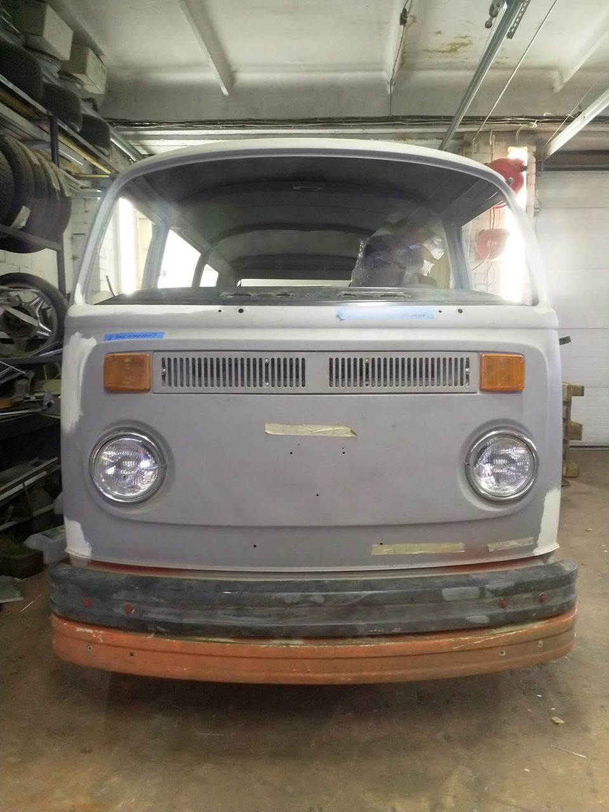
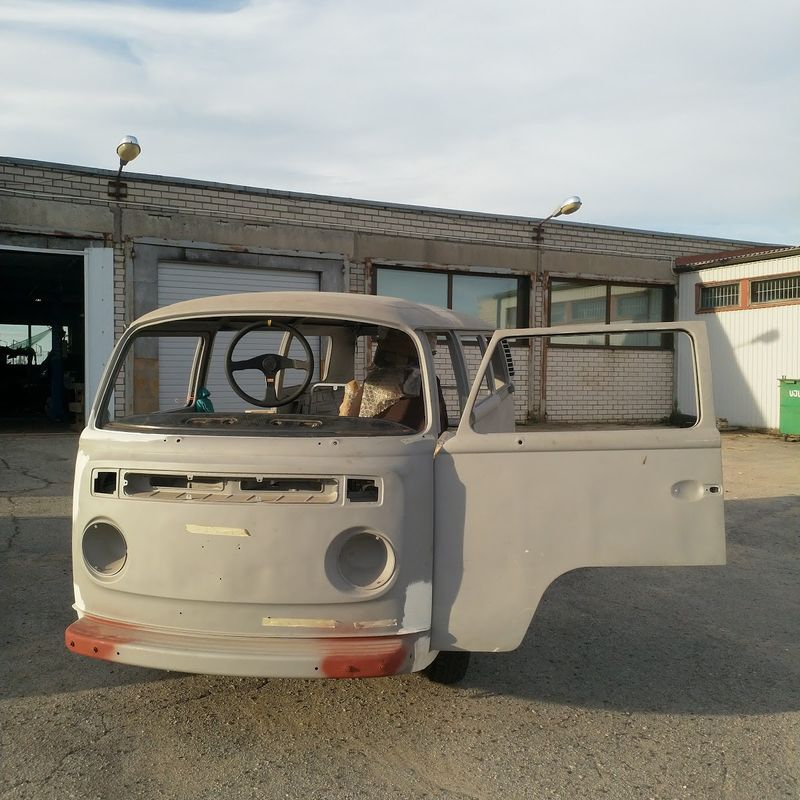
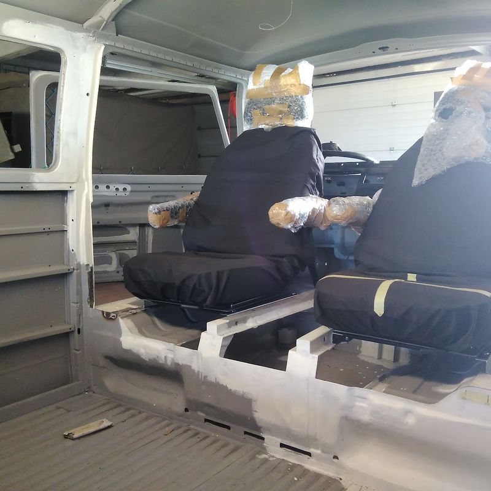
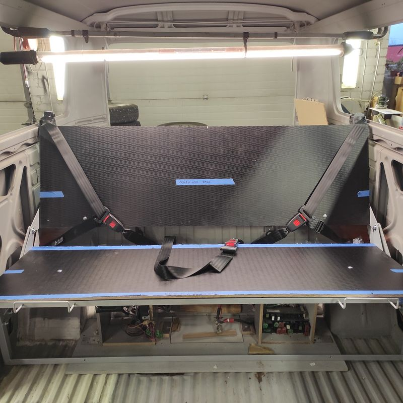
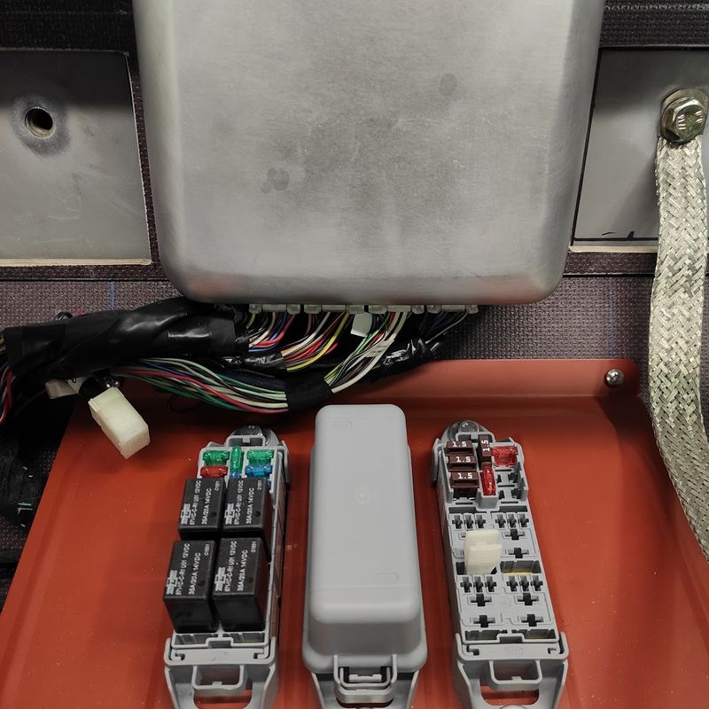

Müügiks
Müüa - VW Transporter T2B (1978) restomod - Subaru EJ25 129kw NA
T2b buss Subaru Impreza (2006) EJ25 mootori ja käigukastiga. Sõidab omal jalal, lõpetamata projekt. Kaasas suur komplekt uusi ja kasutatud varuosi.
Hind
10 000 €
Hind ei ole läbiräägitav.
Tehnilised andmed
- Mark ja mudel
- Volkswagen Transporter T2b
- Väljalaskeaasta
- 1978
- VIN
- 2382066793
- Mootor
- Subaru EJ25, 2.5L boxer, 129 kW, vabalthingav, läbisõit ca 110 000 km
- Käigukast
- Subaru Impreza (2006), Subarugears ümberehitusega
- Vedu
- Tagavedu, mootor taga
- Kere
- Enamus keretöid tehtud, klaaspritsitud, krunditud
- Elekter
- Uus juhtmestik, mugavusvarustus lõpetamata
- Mugavusvarustus
- 2 kapteniistet, mis pööravad 360 kraadi. Viper kesklukk+alarm koos kaugkäivitusega. Taga rock'n'roll iste/voodi, tagumised küljeaknad avatavad.
- Seisukord
- Sõidab omal jalal, lõpetamata projekt
Detailid
Tehtud
- Subaru EJ25 129kw mootor ja käigukast paigaldatud. Auto sõidab omal jalal. Mootor sõitnud ~110 tuhat km
- Enamus keretöid tehtud, kere klaaspritsitud ja krunditud
- Uued püsikiirusliigendid, rattalaagrid, taastatud käändmikud
- Taastatud pidurisadulad, uus pidurivõimendi, uued piduritorud ja voolikud
- Taastatud madalduskomplektiga esisild
- Uus jäigem PU puksidel stabilisaatorivarras
- Täisring uusi Koni reguleeritavaid gaasiamorte.
- Custom jahutussüsteem - 2 x rööbiti läbi tõmbavat Spal ventilaatoritega jahutusradiaatorit mootoriruumis
- Uus mootorijuhtmestik, kõik märgitud Subaru ametliku elektriskeemi järgi.
- Viper kesklukk+alarm koos kaugkäivitusega
- Ees 2 uut kapteniistet, mis pööravad 360 kraadi
- Taga rock'n'roll iste/voodi
- Uued turvavööd - 5le kohale
- Tagumised küljeaknad avatavad
- Salongiküte custom soojusvahetiga, mis ehitatud VW T5 komponentidest
- Elektriline aknapesu
- Tagaluugil gaasivedrud torsioonide asemel
- Armatuur 2-st VW T2B armatuurist kokku ehitatud, et näeks ajastukohane välja olenemata sellest, et lisandus check-engine ja jahutusvedeliku temperatuuri näidik
Vajab tähelepanu
- Pisemad keretööd - ninapaneelis paar üleliigset auku, vahetada katuse vihmaveerennid (kaasas), üksikud paranduskohad küljepaneelides, mootoriruumi luugi tihendi kanali remont (detailid kaasas)
- Üldjoontes kereplekid pritsimisel laineliseks lastud
- Kere värvimine
- Mugavusvarustuse elekter lõpetamata - töötab katsestendil, vaja autosse laiali vedada. Kesklukumootorid paigaldamata.
- Summuti - puudub, on pööretel liiga vali
- Salong - ukse ja küljepolstrid vaja uued, olemasolevad pole kasutatavad.
- Salong - taga puuduvad istmepolstrid.
- Uuel pidurivõimendil kuskil vaakumileke, tekitab vastikut kõrgsagedusheli.
Videod
Fotod
Ava Google Photos album



Kaasas varuosad
Bussiga tuleb kaasa hulk uusi kereplekke, mitu komplekti uksi ja luuke, klaase, tihendeid jne. Mitu sorteeritud ja sildistatud kasti uusi ning kasutatud varuosi. Osade fotod ja kastide sisu nimekirjad on fotoalbumis.
Vaata varuosi Google Photos albumisKontakt
- Hind
- 10 000 €
- Tingimine
- Hind ei ole läbiräägitav
- Vaatamine
- Kokkuleppel, Kose, Harjumaa